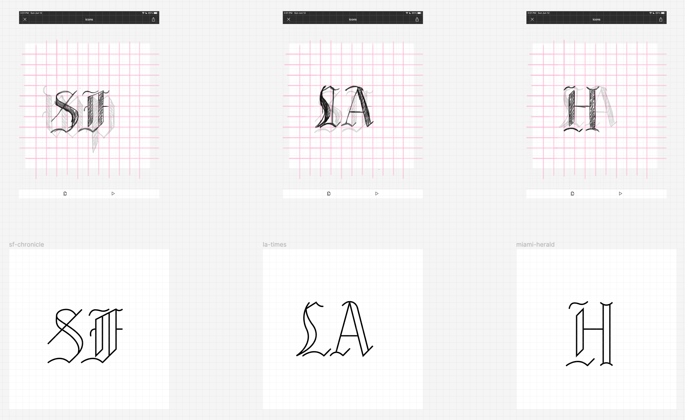
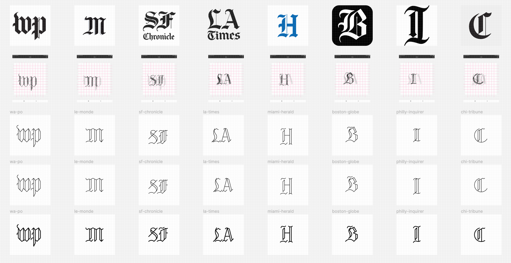
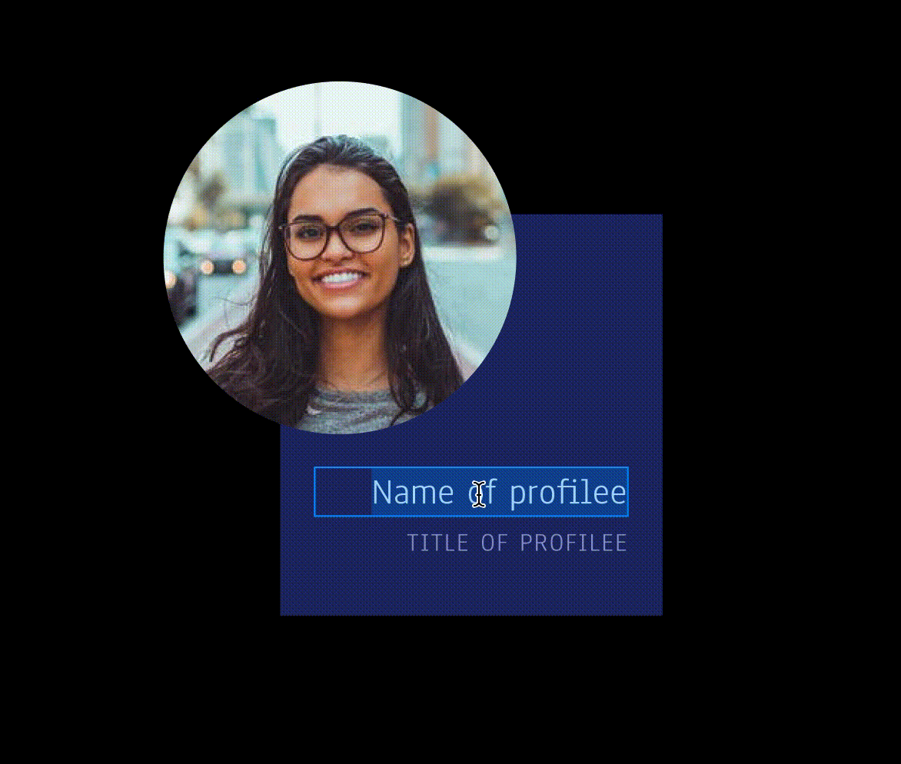
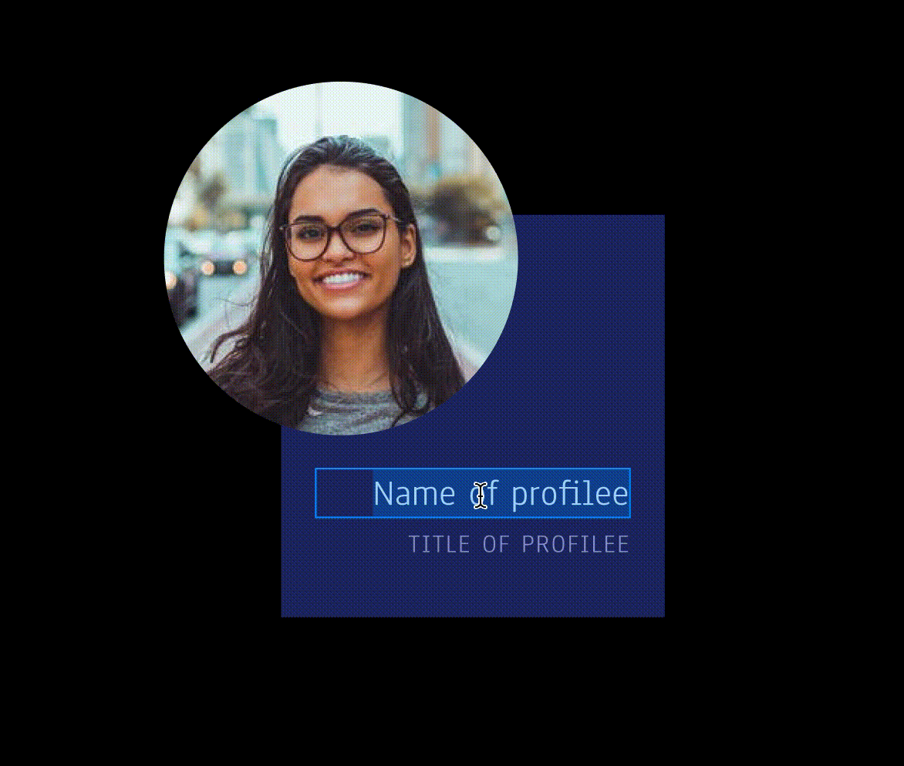

summer creative repository [personal projects]
overview
This is a bank of the personal creative projects I started in the summer of 2022. Each project was done over a period of roughly 1 week.
vectorizing blackletter type
Curious about typography and how to simplify complex shapes for icon creation, I tried my hand at vectorizing the Blackletter masthead logos of news organizations.
 optimizing components for variation
I used this project as an opportunity to explore 2 interests of mine: design systems and Figma auto-layout. Using The A11y Project's website UI as a guide, I recreated (and later categorized) their components in Figma, trying to test the capabilities of auto-layout for optimizing easy resizing and future scalability.

 

Back to homepage